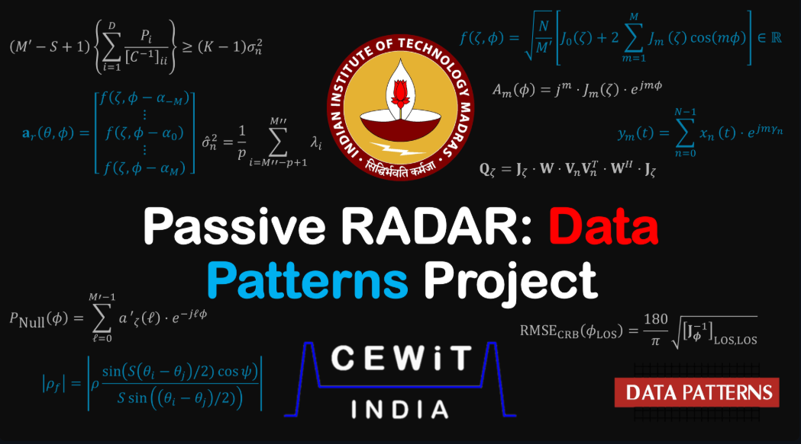

Bachelor's Thesis · Conference Paper · Defence Product
Array Signal Processing
Non-Minimum-Phase Channel DoA Estimation via UCA Phase-Mode Smoothing and Enhanced Subspace Separation
My bachelor's thesis and associated research on developing DoA estimation algorithms for passive RADAR applications with Uniform Circular Arrays (UCAs).
Explore the research ↗